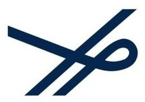

Trade Mark Journal No.2025/030 25 July 2025
WO0000001857050 (10,25)
Office of origin: Brazil
Date of International Registration:13 November 2024
Date of designation in the UK:
13 November 2024

The mark contains the colour dark blue.
- Class 10
- Menstruation belt.
- Class 25
- Hand warmers; non-electric lined cushion to warm your feet; espadrilles; petticoats; non-slip for boots and shoes; antiperspirants (underwear -); hat frames; knitted articles [clothing]; motorists (clothing for -); aprons [clothing]; bibs, other than of paper; bandanas; bath (shorts -); bath (slippers -); bath (clothes -); bath (robes -); bath (sandals -); bath (caps -); Bermudas ; toe caps; toe caps; blazers [clothing]; boa [down stole]; pockets; pockets for clothes; caps; borzeguins; boots (non-slip for -); boots (- pipes); boots (hardware for -); boots (turns to -); boots; ski boots; sports boots; boots; scarves; footwear (heels for -); shoes; wooden shoes; shoes in general; heel pads for socks; pants; long pants; swimming trunks [swim trunks]; shirt (cuff -); shirts; shirts (palas for -); shirts (best of -); t-shirts; coats; hoods [clothing]; top hats; coats [clothing]; priestly chasubles [garment]; long johns; hats (- frames); hats [headgear]; paper hats [clothing]; hats, caps; slippers [slippers]; football boots (locks for -); cyclists (clothing for -); girdles [underwear]; belts [clothing]; coin belts [clothing]; collars [clothing]; false collars; vests; vests; vests [underwear]; fishing vests; combination [underwear]; combinations [clothing]; made up (clothing -); made up (lining -) [part of clothing]; bodice; leather (clothing -); leather (imitation clothing -); underpants; baby culottes; dolmã [military clothing]; dolmã [military clothing]; sleep (masks for -); baby layettes; scapulars; corsets; sports (boots for -); sports (shoes for -); ski (boots from -); fur stoles; sashes [clothing]; headbands [clothing]; costumes; metal fittings for shoes and boots; made-up linings [part of clothing]; football (shoes -); trench coats [clothing]; galoshes; galoshes; uppers for shoes; gymnastics (clothes for -) [tight]; gymnastics (shoes for -); beanies; ties; waterproof (clothes -); intimates (clothes -); jackets; overalls [clothing]; jerseys [clothing]; leggings [pants]; neckerchiefs; liveries; sock garters; lingerie (fr.); gloves [clothing]; ski gloves; fingerless gloves; jumpsuits; knitwear [clothing]; maniples [stoles]; mantillas; mantillas; sleeping masks; socks; socks; socks (heel pads for -); stockings (garters -); perspiration absorbent socks; pantyhose; miters [hats]; miters [hats]; earbuds [clothing]; cap visors; shirt flaps; jackets; insoles; paper (hats -) [clothing]; parkas; skin (stoles -); pelerines; furs [clothing]; furs; dressing gown; fishing (vests for -); neck (scarves -); pajamas; pajamas; plastrom; gaiters; gaiters; gaiters; gaiters (loops for -); ponchos; coin purses (belts -) [clothing]; beach (clothes by -); trouser loops; gaiter loops; pullovers; shirt cuffs; robe; underwear; underwear; underwear; gym clothing; gym clothing [tight]; swimwear; leather clothing; costume clothing; imitation leather clothing; perspiration-absorbent underwear; antiperspirant underwear; clothing for water skiing; bathrobes; skirts; skirts-pants; shoe heels; heels for shoes; sandals; shoes (non-slip for -); shoes (hardware for -); shoes (uppers for -); shoes (turns to -); football shoes; beach shoes; saris; sarongs; overcoats [clothing]; soles for shoes; skull caps [cap]; sweaters; suspenders; suspenders; bras; suits; togas; shower caps; swimming caps; costumes; swimwear; football boot cleats; tunics; turbans; uniforms; clothing; paper clothing; veils [clothing]; turnings for boots and shoes; shawls; alba [priest's clothing]; disposable apron for non-professional use; non-disposable bib; elastic bandage [clothing]; cassock; gown; bermuda shorts for sports; bikini; military blouse; cap; boots for workers; riding pants; sports footwear; footwear for professional use; snowboarding shoes; swimming shorts; military shirt; nightgown; cangas; carapuça [conical cap]; hat; operator coat; chasuble [priestly garment worn over the alb and stole]; slippers [common clothing]; boot; girdle [common clothing]; disposable shoe covers; combat boots; cleat studs; jodhpurs [riding pants]; scarf; stoles; uniform; fardão; tailcoat; coat; lapel scarf [front and top part of a coat facing outward]; poncho; kimono [clothing]; disposable underwear; non-orthopedic soles; spencer; bra for posture without therapeutic purposes; strip (band) for the head; visors [headgear].
DILLY NORDESTE INDUSTRIA DE CALCADOS LTDA
Representative: SKO OYARZABAL MARCAS E PATENTES, Rua Morretes, 457, 91030-300 Porto Alegre, BRAZIL